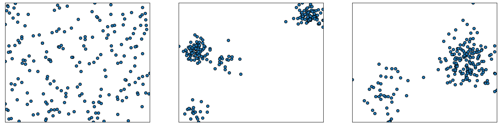
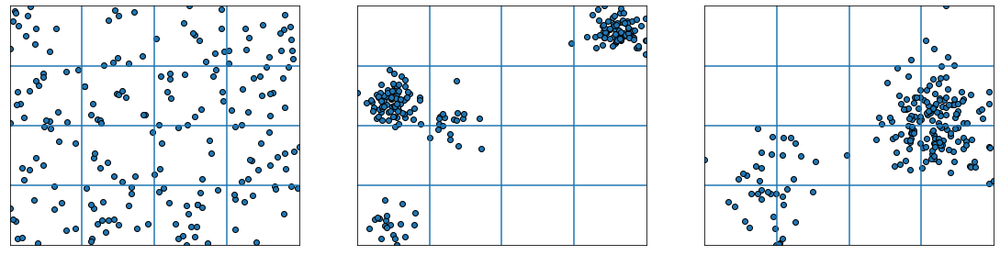
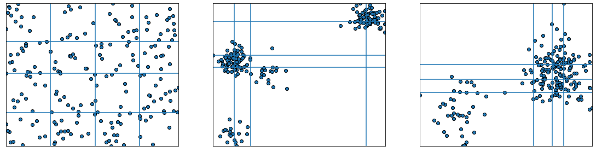
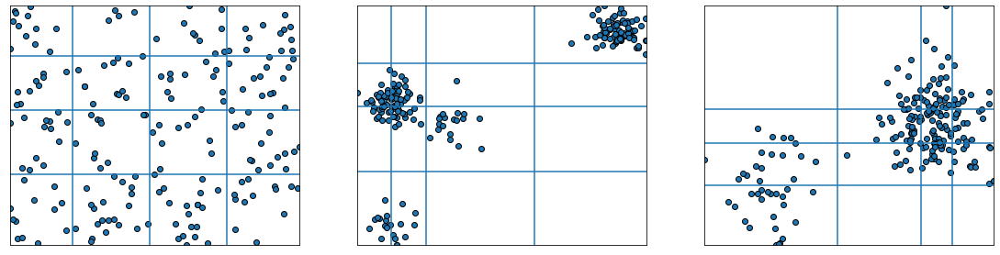
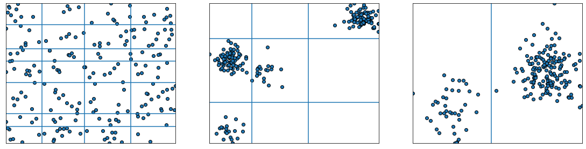

Discretization¶
Introduction¶
In statistics and machine learning, discretization refers to the process of converting or partitioning continuous attributes, features or variables to discretized or nominal attributes/features/variables/intervals. Whenever continuous data is discretized, there is always some amount of discretization error. The goal is to reduce the amount to a level considered negligible for the modeling purposes at hand. Many machine learning algorithms are known to produce better models by discretizing continuous attributes. [1]
In a supervised context, the performance of a particular discretization can be evaluated using class information. Many algorithms use this information to find the minimum number of partitions relative to some metric, such as mutual information. Among these methods we find Fayyad & Irani’s MDL method, CAIM, CACC, and Ameva.
When class information is not available, it becomes difficult to evaluate the partition. Typically data is discretized into partitions of K equal lengths/width (equal intervals) or K% of the total data (equal frequencies).
Test data¶
We begin with our standard imports:
import numpy as np
import matplotlib as mpl
from matplotlib import pyplot as plt
from matplotlib import cm
We will create some synthetic data do test different discretization schemes, 3 data sets with different characteristics, an homogeneous data set, one with 2 blobs and a last one with 3 blobs.
# taken from sklearn docs: https://scikit-learn.org/stable/auto_examples/preprocessing/plot_discretization_strategies.html#sphx-glr-auto-examples-preprocessing-plot-discretization-strategies-py
from sklearn.datasets import make_blobs
n_samples = 200
centers_0 = np.array([[0, 0], [0, 5], [2, 4], [8, 8]])
centers_1 = np.array([[0, 0], [3, 1]])
random_state = 42
X_list = [
np.random.RandomState(random_state).uniform(-3, 3, size=(n_samples, 2)),
make_blobs(n_samples=[n_samples // 10, n_samples * 4 // 10,
n_samples // 10, n_samples * 4 // 10],
cluster_std=0.5, centers=centers_0,
random_state=random_state)[0],
make_blobs(n_samples=[n_samples // 5, n_samples * 4 // 5],
cluster_std=0.5, centers=centers_1,
random_state=random_state)[0],
]
figure = plt.figure(figsize=(6.4*3, 4.8))
for idx, X in enumerate(X_list):
ax = plt.subplot(1, len(X_list), idx+1)
ax.scatter(X[:, 0], X[:, 1], edgecolors='k')
ax.set_xticks(())
ax.set_yticks(())
ax.set_xlim(np.min(X[:,0]), np.max(X[:,0]))
ax.set_ylim(np.min(X[:,1]), np.max(X[:,1]))

Equal width¶
In both methods, arity \(k\) is used to determine the number of bins. Each bin is associated with a distinct discrete value. In equal-width, the continuous range of a feature is evenly divided into intervals that have an equal-width and each interval represents a bin. In equal-frequency, an equal number of continuous values are placed in each bin.
The two methods are very simple but are sensitive for a given k (number of bins). For equal-frequency, for instance, many occurrences of a continuous value could cause the occurrences to be assigned into different bins. One improvement can be that, after continuous values are assigned into bins, boundaries of every pair of neighboring bins are adjusted so that duplicate values should belong to one bin only. Another problem is outliers that take extreme values. One solution can be to remove the outliers using a threshold.
Here we implement equal with discretization. The function disc_eq_width(X, k) takes a data matrix and the number of bins as paramenters. Each feature is discretized individually.
def disc_eq_width(X, k):
# Implement equal width discretization with k bins.
# Each feature is discretized individually (univariate discretization).
# X is a data matrix with an arbitrary number of unsorted features.
m, n = X.shape
# Find class limits.
clims = np.linspace(X.min(axis=0), X.max(axis=0), num=k+1, axis=1)
clims[:,0] = np.NINF
clims[:,-1] = np.Inf
X_disc = np.zeros(X.shape)
for i in range(n):
X_disc[:,i] = np.searchsorted(clims[i], X[:,i], side='right') - 1
# Return the discretized labels in a matrix the same shape as X.
# Return the limits in a matrix which rows are the interval classes of each feature.
return X_disc, clims
To test the function employ the following test matrix:
X_test = np.array([[-2, 1, -4, -1],
[-1, 2, -3, -0.5],
[ 0, 3, -2, 0.5],
[ 1, 4, -1, 2]])
X_disc, bin_edges = disc_eq_width(X_test, 3)
print("The discretized matrix is:")
print(X_disc)
print()
print("The bin edges are:")
print(bin_edges)
The discretized matrix is:
[[0. 0. 0. 0.]
[1. 1. 1. 0.]
[2. 2. 2. 1.]
[2. 2. 2. 2.]]
The bin edges are:
[[-inf -1. 0. inf]
[-inf 2. 3. inf]
[-inf -3. -2. inf]
[-inf 0. 1. inf]]
To explore class limits, we use a helper function
from utils import print_class_limits
print_class_limits(X_disc, bin_edges)
Feature 0
Interval Count
----------------------------
( -inf, -1.0) | 1
( -1.0, 0.0) | 1
( 0.0, inf) | 2
Feature 1
Interval Count
----------------------------
( -inf, 2.0) | 1
( 2.0, 3.0) | 1
( 3.0, inf) | 2
Feature 2
Interval Count
----------------------------
( -inf, -3.0) | 1
( -3.0, -2.0) | 1
( -2.0, inf) | 2
Feature 3
Interval Count
----------------------------
( -inf, 0.0) | 2
( 0.0, 1.0) | 1
( 1.0, inf) | 1
When applied to the test data with K=4, we obtain:
results = [disc_eq_width(X, 4) for X in X_list]
bin_edges = [x[1][:,1:-1] for x in results]
figure = plt.figure(figsize=(6.4*3, 4.8))
for idx, X in enumerate(X_list):
ax = plt.subplot(1, len(X_list), idx+1)
ax.scatter(X[:, 0], X[:, 1], edgecolors='k')
ax.set_xlim(np.min(X[:,0]), np.max(X[:,0]))
ax.set_ylim(np.min(X[:,1]), np.max(X[:,1]))
for x in bin_edges[idx][0]:
ax.axvline(x)
for y in bin_edges[idx][1]:
ax.axhline(y)
ax.set_xticks(())
ax.set_yticks(())

for i, res in enumerate(results):
print('########################')
print(f'Matrix {i}')
print('########################')
print_class_limits(*res)
print()
########################
Matrix 0
########################
Feature 0
Interval Count
----------------------------
( -inf, -1.5) | 49
( -1.5, -0.013) | 48
( -0.013, 1.5) | 49
( 1.5, inf) | 54
Feature 1
Interval Count
----------------------------
( -inf, -1.5) | 58
( -1.5, -0.0022) | 38
( -0.0022, 1.5) | 57
( 1.5, inf) | 47
########################
Matrix 1
########################
Feature 0
Interval Count
----------------------------
( -inf, 1.3) | 101
( 1.3, 3.9) | 19
( 3.9, 6.5) | 1
( 6.5, inf) | 79
Feature 1
Interval Count
----------------------------
( -inf, 1.5) | 20
( 1.5, 4.0) | 7
( 4.0, 6.5) | 93
( 6.5, inf) | 80
########################
Matrix 2
########################
Feature 0
Interval Count
----------------------------
( -inf, 0.057) | 25
( 0.057, 1.4) | 16
( 1.4, 2.8) | 51
( 2.8, inf) | 108
Feature 1
Interval Count
----------------------------
( -inf, -0.014) | 22
( -0.014, 0.97) | 91
( 0.97, 1.9) | 81
( 1.9, inf) | 6
There is a rule of thumb for determining the optimal number of bins in a histogram. The Freedman-Diaconis rule states that the optimal bin width can be estimated as
The asymptotic (large \(n\)) optimal bin width was derived by Scott [1], yet, its value depends on the derivative of the theoretical distribution, often not known. Freedman and Diaconis claimed [3] the bin width can be robustly estimated by the formula above, which works well most of the time, under the requirements that the true distribution has squared integrable and continuous first and second derivatives.
It is worth it to provide a rough derivation of the FD rule, as it is an nice exercise in the art of approximation. You can find such derivation in the Appendix.
Equal frequency¶
We now deal with equal frequency binning. To find the bin limits we can use the percentiles of each feature, as to partition with equal number of elements in each interval.
Again, with 4 bins (K=4), but using equal frequency:

You’ll implement this method in the assignment.
Equal-width and equal-frequency are simple and easy to implement. This does not come without a price. First, arity k has to be specified beforehand. Because we usually do not know what a proper value k is, we need to resort to trial-and-error or specify a value randomly.
Both this methods are implemented in the sklearn preprocessing module, in the KBinsDiscretizer method. KBinsDiscretizer performs extra safety checks, so should be preferred in production. Refer to: https://scikit-learn.org/stable/modules/generated/sklearn.preprocessing.KBinsDiscretizer.html
Discretization by clustering¶
1D K-means¶
Discretizing a data set is similar to the clustering problem in the sense that we are looking for partitions with large within-class similarity and small intra-class similarity.
One way to discretize a feature matrix is to apply a clustering algorithm to each individual feature. In the following we will implement discretization via the K-Means clustering algorithm. Since we have not yet implemented our own version of K-means (wait until unit 3), we’ll follow a method proposed by Daniela Joita in [4] to cluster one dimensional features. This particular algorithm has a long history within quantitative geography, where it was first developed by Jenks and Caspall [5], and understandably known as the Jenks-Caspall algorithm, or Jenks natural breaks algorithm.
The idea of the algorithm is to chose initial centers such that they are in increasing order. In this way, the recomputed centers are also in increasing order and therefore to determine the closest cluster for each value of the attribute A, the algorithm does less comparisons than in the general case. The closest cluster either remains the one in which the value belongs to or it is one of the two neighbouring clusters. In this way the number of comparisons done for reallocation of cluster is no longer k (one for each centroid) but 3. Also there is no need to order all the values in dom(A) like in the case of equal- frequency interval discretization.
The cut points are defined as the minimum and maximum of the active domain of the attribute and the midpoints between the centers of the clusters.
In the assignment, you will implement this algorithm starting with a 1D version of K-means, which is applied independently to each feature.
To test the function employ the following test matrix:
The following plots show the results of applying 1D K-means to each feature of the test data, with K=4.

Fisher-Jenks¶
Another modified version of the algorithm that uses dynamic programming to find the optimal partition is the Fisher-Jenks algorithm [6], for which we are missing an implementation. The FJ algorithm tests all possible continuous partitions (reducing the search space) and selects the one that minimizes the clusters variance. Extra point awarded for whom can provide a working well documented implementation (possible project).
While in general there exist \({N \choose K}\) ways of partition N points into K groups, when restricting to ordered continuous partitions the total number of possible partitions is \({N-1 \choose K-1}\). This is easily understood by considering the problem as choosing where to place the braking points in an ordered list. But, even with this reduction the number of possible partition is still impractical for moderate N and K.
To address this, we can formulate the problem in terms of smaller sub-problems, involving finding partitions in subsets of the original data. Then reusing this work by aggregating sub-solutions into the optimal solution. This is possible, since the following lemma holds [6]:
Suboptimization Lemma: If \(A_1:A_2\) denotes a partition of a set \(A\) into two disjoint subsets \(A_1\) and \(A_2\), if \(P_1^{*}\) denotes a least squares partition of \(A_1\) into two \(G_1\) subsets and \(P_2^{*}\) denotes a least squares partition of \(A_2\) into \(G_2\) subsets; then, of the class of subpartitions of \(A_1:A_2\) employing \(G_1\) subsets over \(A_1\) and \(G_2\) subsets over \(A_2\) a least squares subpartition is \(P_1^{*}:P_2^{*}\).
From the lemma follows the recursive relationship
where \(P^{*}(k,U)\) is the optimal partition of subset \(x_1,\ldots,x_U\) into \(k\) groups, and \(D(a,b)\) is the diameter of the cluster comprised of points \(x_a,\ldots,x_b\). Using this recursion relation, build optimal partitions for \(k\) from previous calculated partitions for \(k-1\), starting with \(k=2\). An implementation can be found in [7]. I have implemented the algorithm below, in such a ways that wastes a lot of memory, but is easier to understand. Try to optimize it as an exercise.
# Test data
X = np.array([120, 108, 110, 108, 108, 108, 106, 108,
103, 103, 103, 104, 105, 102, 100, 99])
# Diameter func to test fisher algorithm
def diam_median(X):
X_m = np.median(X)
return np.sum(np.abs(X - X_m))
def fisher(X, K, diam=diam_median, sort=False):
# Discretize a single vector X into K clusters.
N = len(X)
if sort:
X.sort()
# The P matrix stores the optimal partition
# P[k,j] is the (k+1)-partition up to point x[j], inclusive
P = np.full((K,N), np.inf)
# The C and C_prev matrix stores Class limits,
# at the current value of K,where
# C[u] are the limits for P[k,u]
# We abuse copying from C_prev to C which is costly
# Alternativel it seems is possible to build the limits in place
# though It is not clear to me how
C = np.zeros((N,K+1))
C_prev = C.copy()
C_prev[:,0] = 0
for u in range(N):
C_prev[u,1] = u+1
# Store limits for u=N
C_final = np.zeros((K,K+1))
# A matric to store single cluster diameters
D = np.full((N,N), -1.0)
# We could avouid this storage space by changin the loop order
# yet, we pay the price of increased complexity
# see: https://pysal.org/mapclassify/_modules/mapclassify/classifiers.html#FisherJenks
# Build the D matrix and store single cluster P values
for u in range(N):
for l in range(u+1):
D[l,u] = diam(X[l: u+1]) # Just calculate it once
P[0,:] = D[0,:]
# Iteratively build clusters
for k in range(1, K):
for u in range(k, N):
for l in range(k, u+1):
p = P[k-1, l-1] + D[l,u]
if p < P[k,u]:
P[k,u] = p
C[u] = C_prev[l-1]
C[u, k+1] = u+1
C_prev = C.copy()
C_final[k] = C[-1]
print(C_final)
fisher(X, 16)
[[ 0. 0. 0. 0. 0. 0. 0. 0. 0. 0. 0. 0. 0. 0. 0. 0. 0.]
[ 0. 8. 16. 0. 0. 0. 0. 0. 0. 0. 0. 0. 0. 0. 0. 0. 0.]
[ 0. 1. 8. 16. 0. 0. 0. 0. 0. 0. 0. 0. 0. 0. 0. 0. 0.]
[ 0. 1. 8. 14. 16. 0. 0. 0. 0. 0. 0. 0. 0. 0. 0. 0. 0.]
[ 0. 1. 8. 11. 13. 16. 0. 0. 0. 0. 0. 0. 0. 0. 0. 0. 0.]
[ 0. 1. 8. 11. 13. 14. 16. 0. 0. 0. 0. 0. 0. 0. 0. 0. 0.]
[ 0. 1. 8. 11. 12. 13. 14. 16. 0. 0. 0. 0. 0. 0. 0. 0. 0.]
[ 0. 1. 2. 3. 8. 11. 13. 14. 16. 0. 0. 0. 0. 0. 0. 0. 0.]
[ 0. 1. 2. 3. 8. 11. 12. 13. 14. 16. 0. 0. 0. 0. 0. 0. 0.]
[ 0. 1. 2. 3. 6. 7. 8. 11. 13. 14. 16. 0. 0. 0. 0. 0. 0.]
[ 0. 1. 2. 3. 6. 7. 8. 11. 12. 13. 14. 16. 0. 0. 0. 0. 0.]
[ 0. 1. 2. 3. 6. 7. 8. 11. 12. 13. 14. 15. 16. 0. 0. 0. 0.]
[ 0. 1. 2. 3. 4. 6. 7. 8. 11. 12. 13. 14. 15. 16. 0. 0. 0.]
[ 0. 1. 2. 3. 4. 5. 6. 7. 8. 11. 12. 13. 14. 15. 16. 0. 0.]
[ 0. 1. 2. 3. 4. 5. 6. 7. 8. 9. 11. 12. 13. 14. 15. 16. 0.]
[ 0. 1. 2. 3. 4. 5. 6. 7. 8. 9. 10. 11. 12. 13. 14. 15. 16.]]
Kernel density estimation¶
Kernel density estimation [8] is a univariate non-parametric probability density estimation method. It estimates the probability density at point \(x\) through the kernel density function:
where the kernel K is a weighting function, the \(X_i\) are the \(n\) available data points, and \(h\) is the kernel bandwidth, a hyper-parameter. It is essentially a weighted average, where the weights are given by the kernel function. Each point contributes to the density depending on its distance from \(x\). The kernel must be a positive function that integrates to 1. The choice of the bandwidth is crucial and heavily influences the results. Intuitively one wants to choose \(h\) as small as the data will allow; however, there is always a trade-off between the bias of the estimator and its variance. While methods have been proposed for bandwidth selection, a simple yet good performing one is k-fold cross-validation.
Here we will employ KDE as a non-parametric unsupervised discretizing method. First, we find the best kernel density estimate for each row of the data using CV. Then, we select the cut-points at the local minima of the KDE. You will implement this in the assignment.
The following code plots the sample data sets with the found partitions:
bin_edges = [disc_kde(X)[1] for X in X_list]
figure = plt.figure(figsize=(6.4*3, 4.8))
for idx, X in enumerate(X_list):
ax = plt.subplot(1, len(X_list), idx+1)
ax.scatter(X[:, 0], X[:, 1], edgecolors='k')
ax.set_xlim(np.min(X[:,0]), np.max(X[:,0]))
ax.set_ylim(np.min(X[:,1]), np.max(X[:,1]))
for x in bin_edges[idx][0][1:-1]:
ax.axvline(x)
for y in bin_edges[idx][1][1:-1]:
ax.axhline(y)
ax.set_xticks(())
ax.set_yticks(())

References¶
Discretization: An Enabling Technique, Liu et. al.
- 1
Wikipedia contributors. Discretization of continuous features — Wikipedia, the free encyclopedia. 2019. [Online; accessed 11-March-2021]. URL: https://en.wikipedia.org/w/index.php?title=Discretization_of_continuous_features&oldid=898762851.
- 2
David W Scott. On optimal and data-based histograms. Biometrika, 66(3):605–610, 1979.
- 3
David Freedman and Persi Diaconis. On the histogram as a density estimator: l 2 theory. Zeitschrift für Wahrscheinlichkeitstheorie und verwandte Gebiete, 57(4):453–476, 1981.
- 4
Daniela Joiţa. Unsupervised static discretization methods in data mining. Titu Maiorescu University, Bucharest, Romania, 2010.
- 5
George F Jenks and Fred C Caspall. Error on choroplethic maps: definition, measurement, reduction. Annals of the Association of American Geographers, 61(2):217–244, 1971.
- 6(1,2)
Walter D Fisher. On grouping for maximum homogeneity. Journal of the American statistical Association, 53(284):789–798, 1958.
- 7
John A Hartigan. Clustering algorithms. John Wiley & Sons, Inc., 1975.
- 8
Wikipedia contributors. Kernel density estimation — Wikipedia, the free encyclopedia. 2021. [Online; accessed 11-March-2021]. URL: https://en.wikipedia.org/w/index.php?title=Kernel_density_estimation&oldid=1010981873.
TO-DO¶
[ ] Discuss several recent unsupervised methods in the literature (papers available on bibliography folder).
[ ] Add methods discussed in https://geographicdata.science/book/notebooks/05_choropleth.html#quantitative-data-classification